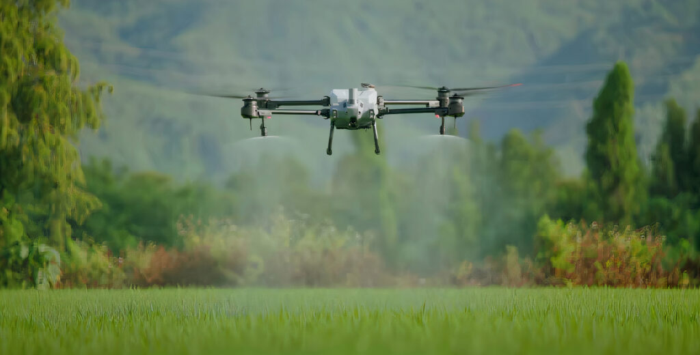

FEZA Kurtarma Eskişehir ve Afyonkarahisar
Drone ile Tarımsal İlaçlama
Eskişehir ve Afyonkarahisar bölgesinde tarla, bahçe, bağ ve eğimli arazilerde kontrollü, hızlı ve planlı drone ile tarımsal ilaçlama uygulaması.
Hizmet Detayı
Eskişehir ve Afyonkarahisar drone ile tarımsal ilaçlama hizmeti; klasik yöntemlerle girilmesi zor, işçilik maliyeti yüksek veya ürün ezilme riski olan alanlarda hızlı çözüm sağlar. Çifteler, Emirdağ ve çevre ilçelerden gelen taleplerde uygulama öncesinde arazi yapısı, ürün tipi ve ihtiyaç duyulan işlem değerlendirilir.
Nerelerde Kullanılır?
- Tarla, bağ, bahçe ve geniş ekim alanlarında
- Eğimli, çamurlu veya traktör girişinin zor olduğu arazilerde
- Zaman kaybetmeden müdahale edilmesi gereken ilaçlama işlerinde
Avantajları
- Ürün ezilme riskini azaltır.
- İşçilik ve zaman tasarrufu sağlar.
- Parsel ihtiyacına göre daha kontrollü uygulama yapılmasına yardımcı olur.
Eskişehir ve Afyonkarahisar'da Drone İlaçlama Bölgeleri
Çifteler, Odunpazarı, Tepebaşı, Alpu, Sivrihisar, Mahmudiye, Seyitgazi, Afyonkarahisar Merkez, Emirdağ, Bolvadin, Çay, Dinar, Sandıklı ve Şuhut çevresinde drone ile tarımsal ilaçlama, tarla ilaçlama ve bahçe ilaçlama talepleri konum ve iş yoğunluğuna göre değerlendirilir.
Drone İlaçlama SSS
Drone ile ilaçlama hangi arazilerde avantajlıdır?
Geniş tarlalar, bağ ve bahçeler, eğimli alanlar, çamurlu zeminler ve traktörle girilmesi zor parseller drone ilaçlama için uygundur.
Eskişehir ve Afyon ilçelerine hizmet var mı?
Eskişehir ve Afyonkarahisar çevresindeki ilçelerden drone ilaçlama talepleri alınır. Çifteler, Emirdağ, Bolvadin, Sivrihisar ve yakın bölgeler konuma göre değerlendirilir.
Planlama için hangi bilgiler gerekir?
Arazi konumu, ürün tipi, tahmini alan büyüklüğü ve yapılacak uygulama bilgisi paylaşıldığında en uygun planlama daha hızlı çıkarılır.